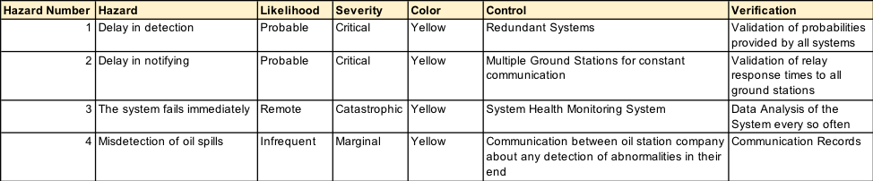
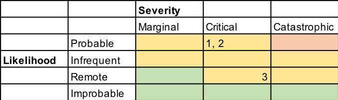
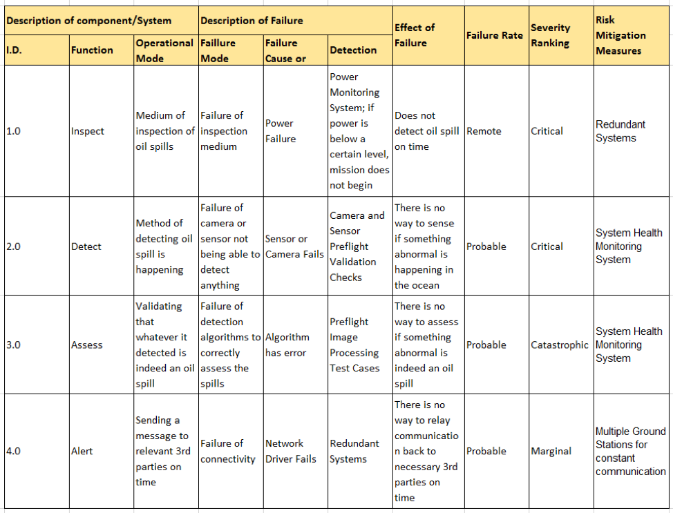
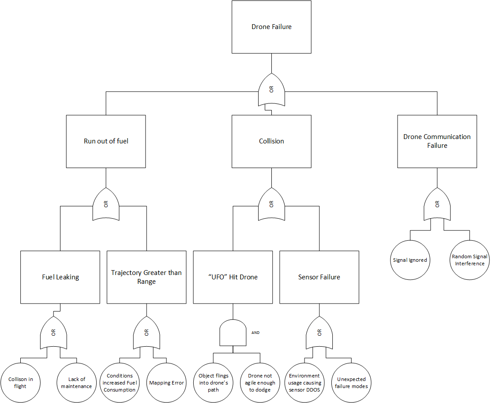
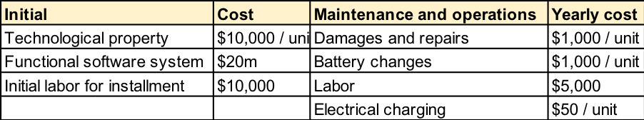

We utilized three similar (but distinct) tools to assess the risks related to our system. We began with a simple risk matrix in which we considered four broad hazards to our system as well as their likelihood and severity and how we would control for these hazards and verify our controls. Note that, in this matrix, the "system fails immediately" refers to the UAVs simply crashing, while "misdetection of oil spills" refers to either oil spills going undetected or UAVs incorrectly assessing oil spills or detecting oil spills that are not actually present.
We could then represent these risks chromatically, with green representing relatively low-priority risks, yellow representing mid-priority risks, and red indicating the highest priority. As we see below, all four of our risks fall under the category of "mid-priority".
We next created an FMECA table, which focuses instead on the four primary functions of our system (inspect, detect, assess, and alert) and considers ways in which these our system could fail to serve these functions.
Finally, we conducted risk analysis by constructing a fault tree, which begins by considering the most high-level failures our system could encounter and then considers what other, lower-level failures could lead to these, in what combination.
From these forms of analysis, we see that while our system does have moderate risks of failure, such risks are easily controlled for with proper preparation and engineering.
Before we finalized our concept, it was important to determine whether such a system would actually be a good investment. To conduct this analysis, we simply compared two sets of costs: the costs of having a system such as this in place and detecting oil spills early versus the cost of not having such a system and having spills continue much longer.
To begin, we considered the expected costs of an oil spill in three categories: critical costs, economic costs, and external/indirect costs. The meanings of these categories should be made clear by the costs listed underneath them. Although oil spills have many different types of costs, we considered the following:
The total expected cost (from all of these) depends heavily on the size of the spill. Small, easily-contained spills are often unnoticed by the public, while a spill on the level of Deepwater Horizon can have an extraordinary cost. To use this example, BP's Deepwater Horizon spill was estimated to have a purely economic cost in excess of $12.5 billion. Note that this does not include reputational damages and costs to humanity as a whole due to the spill. These costs could have been greatly reduced if the spill were detected earlier.
The obvious benefit of Project Spillcry's system is that oil spills would be detected faster, lowering the total cost of these spills. However, we must also consider the cost of our system. To do so, we consider two types of costs: initial costs, and maintenace and operations costs.
Considering these types of costs, we can roughly estimate each type and develop an estimated total cost of our system.
From this analysis, we see that, depending on the size of our UAV swarm, we can expect initial costs between roughly $20.1m and $23m initially, with an estimated yearly cost between roughly $30,000 and $300,000.
Note that our initial cost is higher than we first required; however, our maintenance and operations costs are far lower. We also see that having more UAV units in our system will increase both our initial and operational costs, but especially our operational costs. Thus, in order to keep our operational costs as low as possible (to offset the higher initial cost) while maintaining enough units to collect an adequate amount of data, we settled on a system of eight UAVs arranged in an octagonal squad. This, we determined, was the optimal compromise between more data (meaning more accurate detection/assessment) and lower cost.
In terms of the financial feasibility of our system, we see that over a twenty-year period our system would cost under $30 million - much lower than the potential mult-billion dollar cost of an undetected oil spill. This renders the system a worthy investment.
Our final concept is as follows: an octagon squad of eight UAVs that regularly conduct flyover inspections of spill-vulnerable areas, using computer vision to detect oil spills. These areas can be input by the customer using GPS coordinates. The time between inspections is recommended as one hour, but can be customized by the customer. The UAVs collaborate and exchange information about the region they are surveying as they inspect. If a spill is detected, linear Gaussian approximation is used to assess the oil spills and the internet is used to alert any 3rd parties who wish to receive alerts about detected spills.